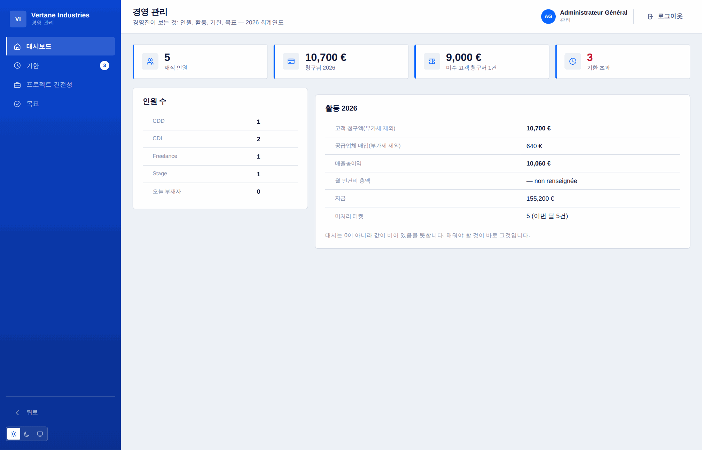
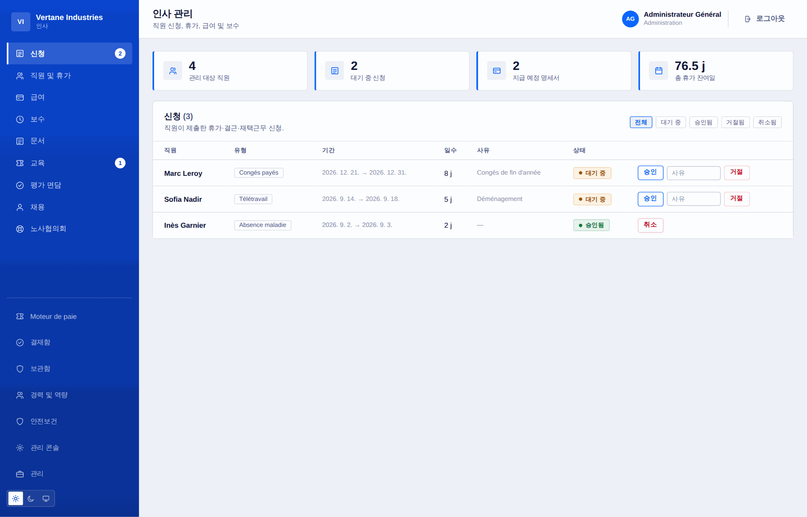
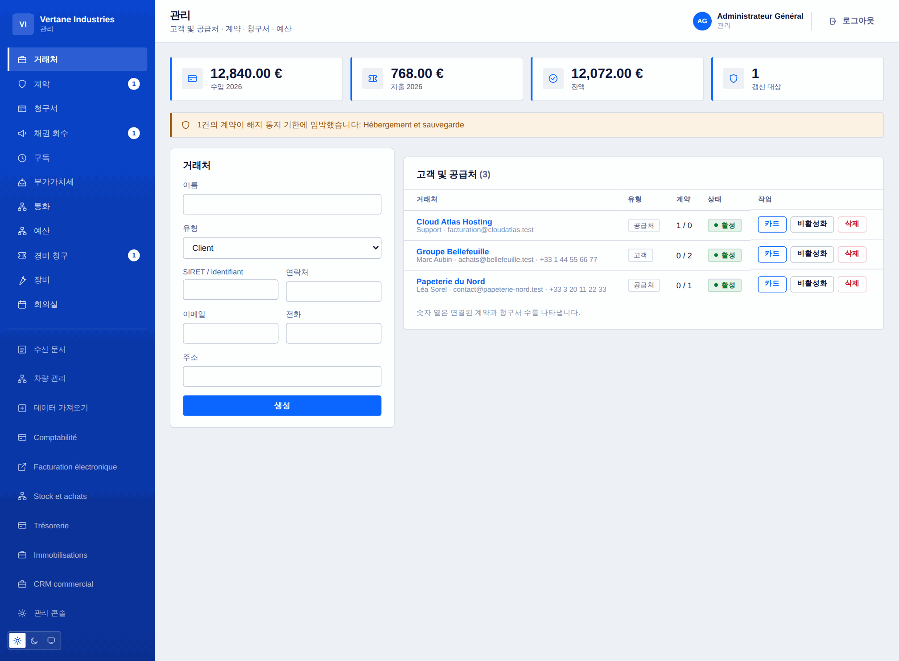
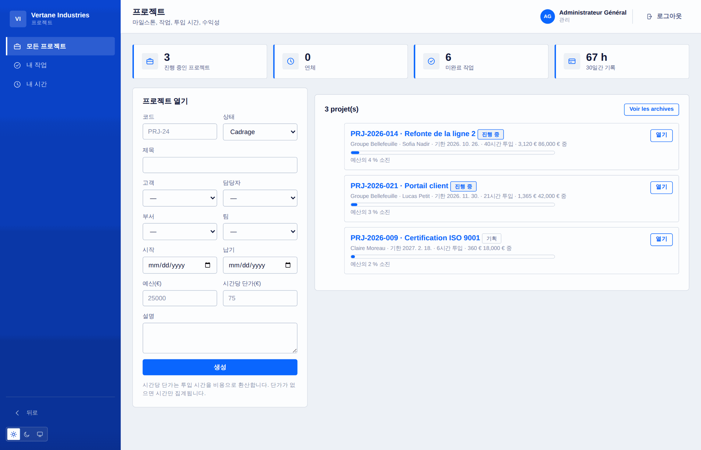
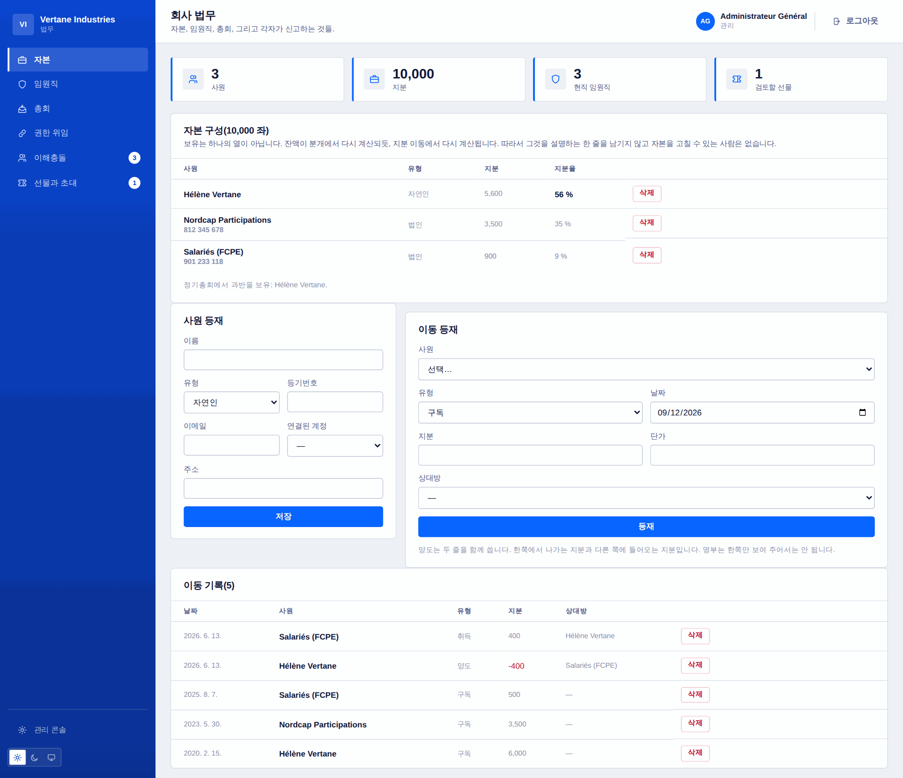

한 곳, 하나의 사실
부서 예산은 그 부서의 청구서와 구성원의 승인된 경비를 스스로 합산합니다. 입고는 같은 동작으로 재고에 들어갑니다. 아무도 다시 입력하지 않으니, 아무도 서로 어긋나지 않습니다.
서로 말을 섞지 않는 다섯 개의 소프트웨어는 하나보다 비싸고, 가장 중요한 것을 잃게 합니다. 바로 전체 그림입니다. Toutadmin은 반대에서 출발합니다. 하나의 데이터베이스, 여러 공간, 그리고 권한.
부서 예산은 그 부서의 청구서와 구성원의 승인된 경비를 스스로 합산합니다. 입고는 같은 동작으로 재고에 들어갑니다. 아무도 다시 입력하지 않으니, 아무도 서로 어긋나지 않습니다.
모든 경로가 서버 쪽 검사를 갖고 있고, 소속은 요청마다 다시 읽습니다. 퇴사는 쿠키가 만료될 때가 아니라 즉시 접근을 끊습니다. 볼 권한이 없는 것은 애초에 검색되지 않습니다.
계약 해지 통지 기한, 갱신해야 할 자격, 건강검진, 차량 검사, 임원 임기, 협력사 증빙. 하나의 엔진이 이 모두를 모아 적임자에게 한 번만, 중복 없이 알립니다.
모듈은 켜는 그 자리에서 한계를 보여 줍니다. 설명서 맨 뒤가 아니라요. 체크된 상자보다 정직한 한 문장을 택합니다. 석 달째의 나쁜 소식을 막아 주는 건 바로 그것입니다.
첫 화면만이 아닙니다. 상태, 오류 메시지, 확인 대화상자까지. 아랍어에서는 화면 전체가 뒤집힙니다. 스타일시트가 논리 속성만 쓰기 때문입니다.
SaaS라면 5분이면 준비됩니다. 유료 요금제에서는 데이터베이스를 자체 서버에 둘 수도 있습니다. 같은 소프트웨어, 같은 업데이트, 데이터는 여러분의 벽 안에.
하루 여덟 시간 열어 두는 사람을 위해 만든 화면입니다. 한눈에 들어오는 정보, 쓸데없는 팝업 없음, 어디서나 같은 용어.
인원, 청구액, 마진, 자금, 지원. 경영진이 보는 것이 한 화면에 담깁니다. 줄표는 값이 없다는 뜻입니다 — 숫자로 오해될 0은 쓰지 않습니다.



마일스톤, 열로 정리된 작업, 투입 시간, 그리고 예산 대비 수익성. 원가는 입력하지 않습니다. 시간과 시간당 단가에서 나옵니다.


열네 개 영역, 백서른 개가 넘는 기능.
나머지를 떠받치는 것: 계정, 소속, 그리고 모든 공간이 함께 쓰는 용어.
11
모두가 아침에 여는 화면. 자신과 관련된 것만 있고, 그 밖에는 없습니다.
10
입사부터 퇴사까지의 직원 파일과, 거기에 따라오는 기한들.
11
지원부터 첫 출근까지, 중간에 표 계산 파일은 없습니다.
7
문서로 남겨야 하고, 스스로 알림을 보내는 의무들.
7
거래처, 계약, 들어오는 돈과 나가는 돈.
10
기본적으로 꺼져 있고, 필요할 때 켜는 모듈들.
10
무엇을 주문했고, 무엇이 왔고, 무엇이 청구됐는지 — 그리고 우리가 받아야 할 것.
8
프로젝트가 어디까지 왔고 실제로 얼마가 들었는지 아는 것.
6
사내 요청과 고객 요청을 한 흐름에, 답변은 남습니다.
6
근무표, 품질, 회의실, 차량, 안내 데스크.
10
경영진이 보는 것, 그리고 결정하는 것.
8
소프트웨어 자산, 접근 권한, 장애, 그리고 팀이 배포하는 것.
8
회사가 증명할 수 있어야 하는 것들을, 그때그때 남겨 둡니다.
9
아래의 모든 것이 제품에 들어 있습니다. 무료 요금제를 포함해 어떤 요금제든 같습니다.
해시 저장 비밀번호(bcrypt), 복잡도 정책, 반복 실패 시 잠금, 복구 코드가 있는 TOTP 2단계 인증, 세션은 하나씩 또는 한꺼번에 해제할 수 있습니다.
각 기록은 바로 앞 기록의 지문을 품습니다. 한 줄을 고치거나 가운데서 한 줄을 빼면 사슬이 바로 그 자리에서 끊기고, 검증이 어디인지 알려 줍니다. 하지 못하는 것: 서버를 쥔 사람의 재작성 자체를 막는 일 — 다만 그것을 드러나게 합니다.
프랑스에서는 직원 50명부터 의무입니다. 내용은 데이터베이스에서 암호화되며, 지정된 담당자만 읽을 수 있습니다. 관리자는 읽을 수 없습니다. 제보가 관리자를 향할 수 있기 때문입니다. 계정 없이 코드로 익명 추적하며, 기록도 남기지 않습니다.
회사 전체를 운영하는 가격은 하나뿐입니다 — 직원 한 명당, 한 달에. 모듈을 따로 사지도, 기능마다 더 내지도 않습니다. 모든 요금제에 제품 전체가 들어 있습니다.
직원 한 명당 월 5유로
제품 전체를 기간 제한 없이, 기능도 자르지 않고 무료로. 이제 시작하는 회사, 단체, 사무소를 위한 요금제입니다.
시작하기직원 한 명당 월 5유로, 이백오십 명부터 오백 명까지는 4유로, 그 이상은 3유로. 지금 있는 인원만큼 내지, 언젠가 생길지 모르는 인원만큼 내지 않습니다.
시작하기한 번에 10,000유로. 구독 없음, 기한 없음, 인원 상한 없음. 쓰고 싶은 동안 소프트웨어는 여러분의 것입니다.
문의하기세금 별도. 월 요금제에는 약정 기간이 없습니다.
직원 5명 미만이면 전부 무료입니다. 그 이상이면 직원 한 명당 월 5유로(이백오십 명부터 체감), 또는 평생 라이선스로 한 번에 10,000유로. 시험해 보는 데 카드는 필요 없습니다.